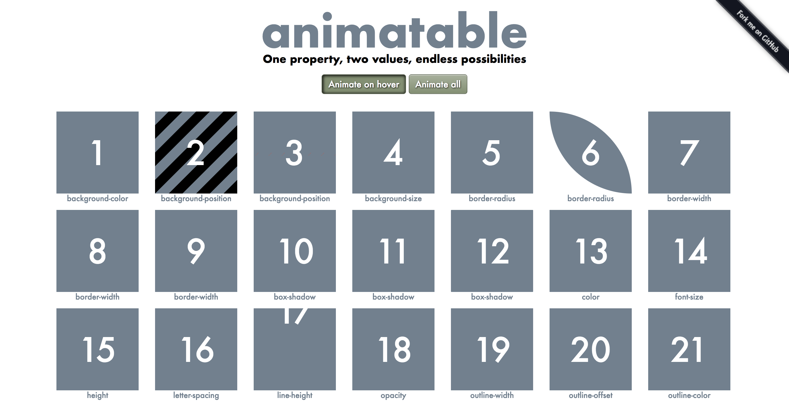
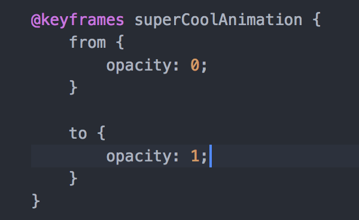
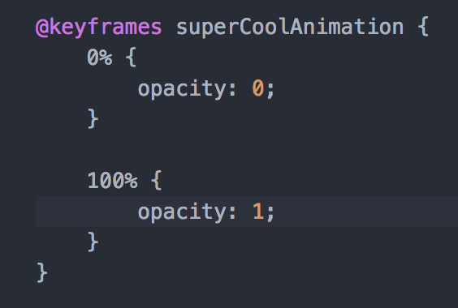
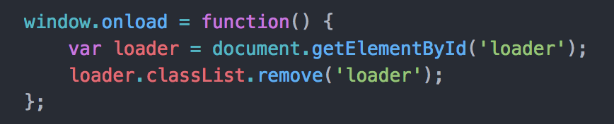
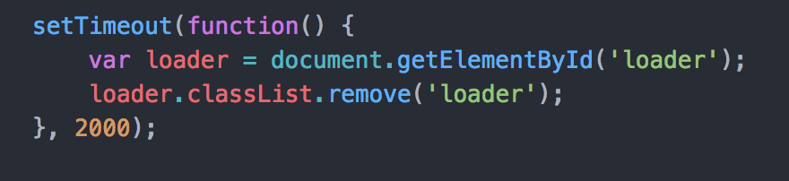

Intro to CSS Transitions, Transforms and Keyframes
Hannah Hudson
Introductions

- What's your name?
- Experience with CSS and/or animation?
- Anything you're hoping to learn?
Tonight's Agenda
- CSS Transitions
- CSS Transforms
- @keyframes Rule
- Create loader animation!
- Initialize it with JavaScript
How to Trigger a Change

- Hover
- Form or button focus
- Active or visited links
- JavaScript Event (ex: click, window load)
What Can We Change (Animate)?

Let's start with hover

CSS Hover Psuedo Selector
- The change happens immediately
- No control over speed, duration, timing etc.
Transition

Transition Properties
- Transition Duration
- Transition Delay
- Transition Property
- Transition Timing Function
Transition Duration
transition-duration: 1s;
This transition will take 1 second to finish
Transition Delay
transition-delay: 300ms;
This code will waut 300 miliseconds before starting
Transition Property
- The name of the property you want to transition
- Helpful when transitioning multiple properties
- Default value is "all"
Transition Timing Function

- Determines the in-between steps of the transition
- Example: Does the animation start off slow and get faster?
- Default value is "ease"
- Examples
Cubic Bezier

Its possible to define our own transition timing functions with Cubic Bezier
Transition Shorthand
property, duration, timing-function, delay
transition: color, 2s, ease-in-out , 1s
The only 'mandatory' property is transition-duration!
Transforms

- Allow us to change an element
- Can be triggered (hovered) but not a requirement
Rotate
transform: rotate(45deg);
- Takes a positive or negative angle value (most commonly, degrees)
- Also possible to split up X, Y and even Z axis. Docs Here!
- Transforming on hover needs a transition duration to work
Scale
transform: scale(2)
- Takes one or two integer values
- One number assumes X and Y
Translate

transform: translate(10px, 50px)
- Moves an element horizontally and/or vertically
- Takes negative or positive measurement values such as pixels
- One number assumes the X value
Skew
transform: skew(20deg, 10deg);
- Skews an element on the X and Y axis
- Takes one or two integer values
- One number assumes X
Multiple Transforms

transform: scale(2) rotate(90deg);
Keyframes

Lets us animate elements with or without a trigger event, define steps in the animation and more!
Declaring Our Keyframe Rule


This means the same thing!
We need a few more things to make our keyframe animation work
Mandatory
- animation-name
- animation-duration
Optional
- animation-iteration-count
- animation-direction
- animation-timing-function
- animation-play-state
Animation Property Examples
| animation-name: fadeIn |
What did we call our animation? |
| animation-duration: 3s |
How long should it last? |
| animation-iteration-count: infinite |
How many times should it play? |
| animation-direction: reverse |
Which direction should it play? |
| animation-timing-function: linear |
How should the speed be dispersed (see transition-timing-function) |
| animation-play-state: paused |
Do we want to pause our animation on a hover? |
How can we make this animation smoother?
Loading Screen Animation with Keyframes

Adding functionality with JavaScript

Ideally our we should 'listen' for when the page has loaded

We can cheat to make sure we see our animation

Thanks!

/